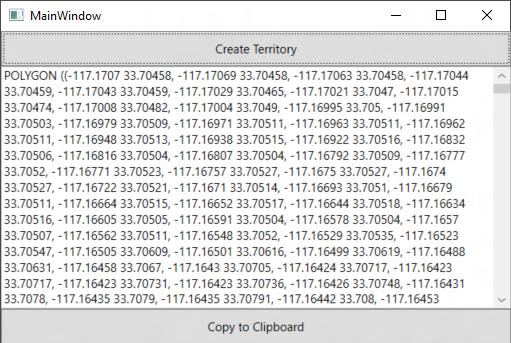

Often it is useful to be able to create custom territories from existing, well known, boundaries. Zip Code boundaries are fairly commonly used to create sales territories. This code sample shows how to take simple zip code information, retrieve their boundaries from the Bing Maps GeoData API, combine them together to form a single shape and then generate a Well Known Text format of the shape which can easily be used in Bing Maps and other spatial tools such as SQL.
You can find documentation on the Bing Maps GeoData API here: https://code.msdn.microsoft.com/Creating-terriorties-from-73c7ebc5/https://msdn.microsoft.com/en-us/library/dn306801.aspx
This code sample also makes use of the SQL Spatial library to do the complex task of combining the boundaries together. Note that this does not require having SQL installed. You can find this library on Nuget here:
https://www.nuget.org/packages/Microsoft.SqlServer.Types
To build this sample, open the MainWindows.xaml.cs file and insert your Bing Maps key where it says "Your_Bing_Maps_Key". Then press the debug button.
Description
This code sample uses a list of zip codes to build a territory. Each zip code also has a coordinate assigned to it. This is a coordinate that is within the boundary of the zip code. If you don't have this you can easily geocode your zip code data ahead of time. By using coordinates with the Geodata API you reduce the need to regeocode these zip codes which would save on transactions. You can also find lists of zip codes with coordinates online fairly easily. Here is a screenshot of what this simple app looks like:

Tip: If you use this code with one of the Bing Maps controls either directly or via a webserivce, be sure to pas a session key from the map control to the code rather than using a hard coded Bing Maps key. This will make the requests to the GeoData API non-billable.
If you are building a web based app, you can find a well known Text importing module for Bing Maps V7 here: http://bingmapsv7modules.codeplex.com/wikipage?title=Well%20Known%20Text%20Reader%2fWriter
If you are building a WPF, Windows 8+ or Windows Phone app with Bing Maps, take a look at this library which provides an easy way to import Well Known Text into Bing Maps: http://mapstoolbox.codeplex.com